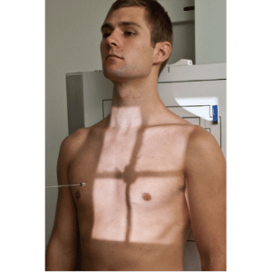
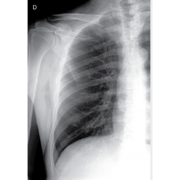
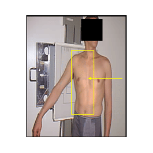
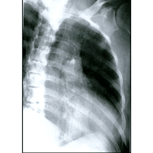

ARCOS COSTAIS - ap
Paciente
Em D.D. ou DV ou ortostático em AP ou PA, hemitórax projetado sobre a LCM/E, braços estendidos e abduzidos.
Chassis / Filme
30×40 longitudinal, posicionado em relação ao ombro.
Raio central
⊥ na vertical / horizontal, orientado para o centro do hemitórax.
DFF
1,00 m – com bucky.


Observação: Quando solicitado bilateral o PMS deverá ser posicionado sobre a LCM/E. Quando a suspeita for nos AC anteriores realizar preferencialmente em PA, quando as suspeita for nos AC posteriores realizar preferencialmente em AP. Em apnéia inspiratória para AC superiores e em apnéia expiratória para AC inferiores.
ARCOS COSTAIS - OBLÍQUA
Paciente
Em D.D. ou DV ou ortostático em AO ou OP, PMS à 45º, hemitórax projetado sobre a LCM/E braços estendidos e abduzidos.
Chassis / Filme
30×40 longitudinal, posicionado em relação ao ombro.
Raio central
⊥ na vertical / horizontal, orientado para o centro do hemitórax.
DFF
1,00 m – com bucky.


Observação: Quando solicitado bilateral o PMS deverá ser posicionado sobre a LCM/E. Quando a suspeita for nos AC anteriores realizar preferencialmente em AO com o lado de interesse afastado do filme, quando as suspeita for nos AC posteriores realizar preferencialmente em OP com o lado de interesse próximo ao filme. Em apnéia inspiratória para AC superiores e em apnéia expiratória para AC inferiores.